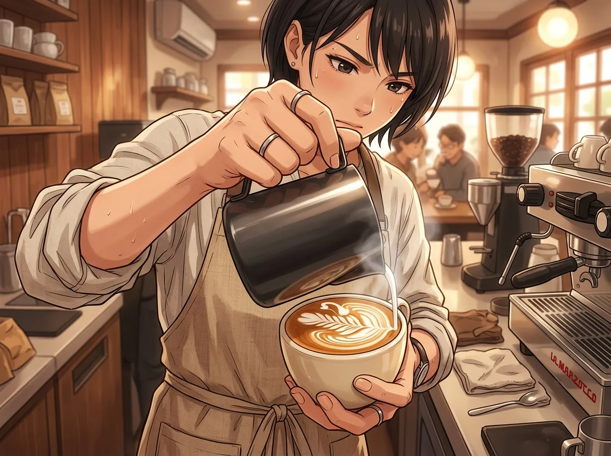
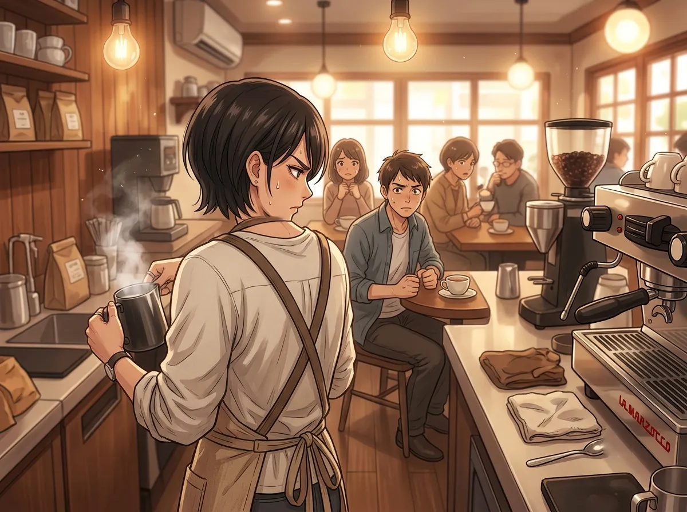
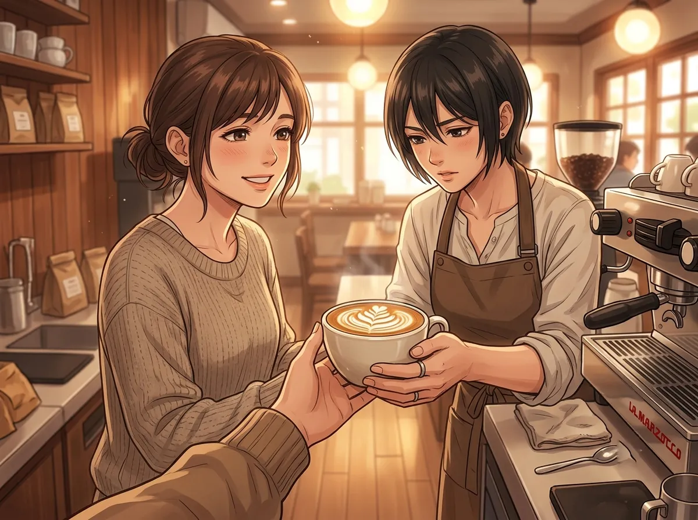
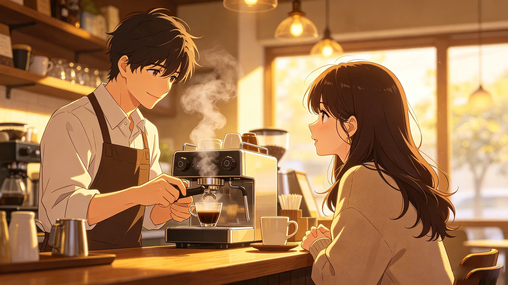
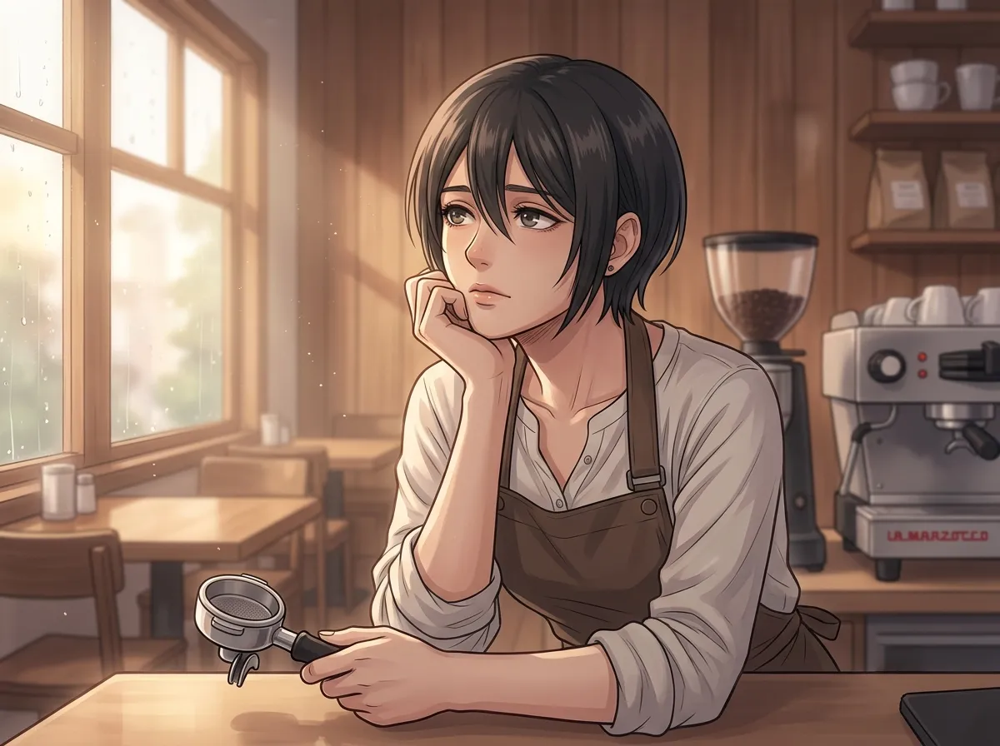

His coffee was perfect. His face was not.
He worked at a coffee shop. The best coffee shop in the city. Everyone said so. His coffee was perfect. His latte art was flawless. His espresso was the smoothest thing you had ever tasted.
But he never smiled. Not once. Not at the regulars. Not at the new customers. Not at the people who told him his coffee changed their lives.
He just made the coffee. He handed it over. He said "Here." And he moved on to the next order.
People were afraid of him. But they kept coming back. Because the coffee was too good to give up.
This is the story of the barista who never smiled. And the one person who made him want to.

He made perfect coffee. Every time. The same way. The same precision. The same result.
His hands were steady. His movements were efficient. His focus was absolute.
He didn't waste words. He didn't waste movement. He didn't waste anything.
People watched him work. They were fascinated. They were intimidated. They were confused.
Why was he so serious? Why didn't he smile? Why didn't he talk? Why did he look like he was performing surgery instead of making coffee?
He treated coffee like surgery. Every step was deliberate. Every action was calculated. Every detail mattered.
He didn't smile because smiling would break the focus. He didn't talk because talking would break the concentration. He didn't do anything that wasn't necessary.
People thought he was cold. They thought he was unfriendly. They thought he didn't care.
They were wrong. He cared. He cared too much. That's why he couldn't relax.

He had regulars. Many of them. They came every day. They ordered the same thing. They sat in the same seats. They watched him work.
They were afraid of him. They admitted it. They told each other. "He's terrifying." "He never smiles." "I don't think he likes us."
But they kept coming back. Because the coffee was too good. Because no one else made it the way he did. Because they couldn't find anything better.
He knew they were afraid. He didn't care. He didn't need them to like him. He needed them to drink his coffee. That was enough.
They were afraid of him. But they came back. Every day. Same order. Same seat. Same fear.
He didn't need them to like him. He didn't need them to smile at him. He didn't need anything from them except their order.
He remembered their orders. He remembered every one. He never called them by name. But he knew what they wanted. And he gave it to them. Perfectly. Every time.

One day, a new customer walked in.
She looked at the menu. She looked at him. She looked at his face. She didn't flinch.
"What do you recommend?" she asked.
He paused. No one asked him that. Everyone ordered the same thing. Everyone knew what they wanted. No one asked for his opinion.
"The house blend," he said. "It's the best."
"Then I'll have that."
She ordered. He made it. He handed it to her. She took it. She looked at him.
"Thank you," she said. And she smiled. Not a big smile. A small smile. A real smile.
He didn't smile back. He couldn't. He didn't know how. But something in his chest shifted. Something he didn't have a name for.
She smiled at him. A small smile. A real smile. He didn't smile back. He couldn't. He didn't know how.
But something changed. Something in his chest shifted. Something he didn't have a name for.
He didn't know why she wasn't afraid. He didn't know why she looked at him like he was a person. He only knew that no one had ever looked at him like that before.
She came back the next day. And the day after. And the day after that.

One day, she walked in and ordered her usual.
He made her coffee. He handed it to her. She looked at him. She paused.
"You look different today," she said.
He didn't know what she meant. He hadn't changed anything. He was wearing the same apron. He was standing in the same spot. He was making the same coffee.
"Different how?" he asked.
"I don't know," she said. "Your face is… softer? Like something made you less heavy."
He didn't know what to say. He didn't know what she was talking about. He hadn't felt less heavy. He hadn't felt anything different.
But she noticed something. Something he hadn't noticed himself.
She noticed something different. He hadn't changed anything. He hadn't done anything different. He hadn't felt anything different.
But she saw something. Something he hadn't seen in himself. Something that had been growing without him noticing.
He didn't know what to do with that. He didn't know what to do with someone who saw him. He didn't know what to do with someone who noticed things he hadn't noticed himself.

He woke up one morning and thought of her.
He didn't know why. He didn't know what it meant. He didn't know what to do with it.
He made his coffee. He got dressed. He went to work. He stood behind the counter. He waited for her.
She came. She ordered. He made her coffee. He handed it to her.
"You look different again," she said. "Happier. Like you're thinking about something nice."
He was. He had been thinking about her. He had been thinking about her all morning. He didn't know how she knew. He didn't know how she always knew.
He didn't say anything. He didn't know what to say. But for the first time, he almost smiled. Almost. Not quite. But almost.
He almost smiled. He hadn't almost smiled in years. He didn't know how. He didn't know what it would look like. He didn't know if he could.
But he almost did. Because she made him want to. Because she made him feel like there was something worth smiling about.
He didn't smile. Not that day. Not the next day. Not the day after.
But he was getting closer. And she was the reason.
Zayne made perfect coffee. He never smiled. He never explained why.
Then she walked in. She wasn't afraid. She smiled at him. She came back. She noticed things. She made him want to smile.
He never smiled. Not fully. Not completely. But he almost did. He almost smiled because of her.
And that was enough. That was more than he had ever had.
He still makes perfect coffee. He still doesn't smile. But now, when she walks in, something in his chest shifts. Something he doesn't have a name for.
It's not a smile. But it's close.